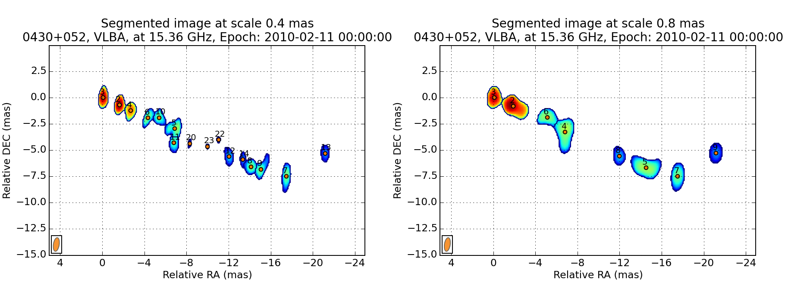
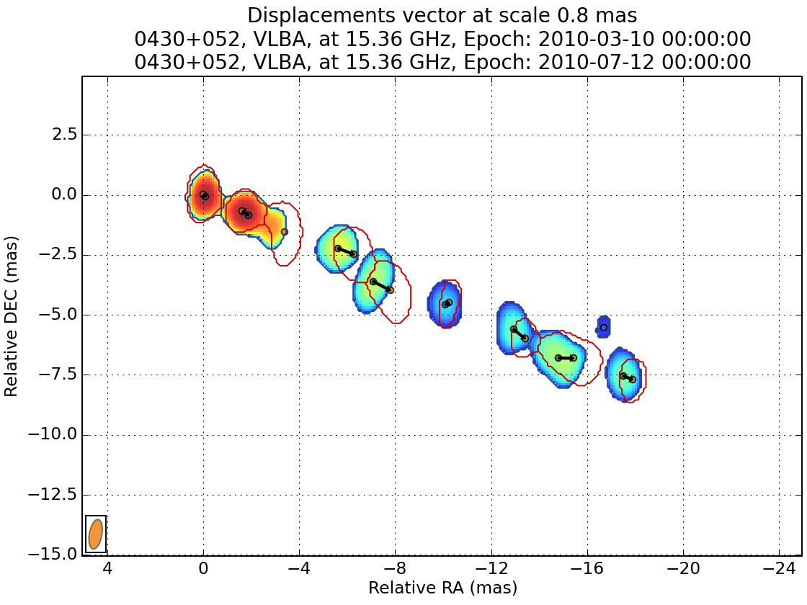

In this walkthrough, I will show the basics of WISE, analysing the kinematic in the jet of 3C120.
We will analyse maps of 3C120 observed with VLBA at 15 GHZ as part of the MOJAVE project. A tar file including all the required maps can be downloaded here Alternatively, you can get them directly from the MOJAVE website (look at FITS I image). We recommend to create a directory where you will run WISE, and to extract the images FITS files in a data directory inside it.
All the tasks are run directly using the wise command line. Executing it without arguments will return a list of all the available tasks:
wise
Usage: wise TASK [OPTIONS]
Available tasks:
detect Run the Segmented wavelet decomposition
info Give information on beam, pixel scales or velocity resolution
match Run the matching procedure
plot_features Plot all features on a distance from core vs epoch
plot_sep_from_core Plot separation from core with time
region View and create DS9 type region files
select_files Build a list of files and output the listing in OUTPUT_FILE.
settings Set and get WISE configuration.
stack Stack images
view Simple image viewer
view_features Plot all features location on the reference image.
view_links Plot all components trajectories on the reference map
The info task is used to list information on FITS files:
wise info data/*2012*
File |Date |Shape |Pixel scale |Beam |
----------------------------------------------------------------------------------------------------------
0430+052.u.2012_01_14.icn.fits |2012-01-14 00:00:00 |2048x2048 |0.100 mas |0.595 mas, 1.255 mas, -0.07 |
0430+052.u.2012_03_04.icn.fits |2012-03-04 00:00:00 |2048x2048 |0.100 mas |0.699 mas, 1.444 mas, 0.20 |
0430+052.u.2012_04_29.icn.fits |2012-04-30 00:00:00 |2048x2048 |0.100 mas |0.576 mas, 1.325 mas, -0.15 |
0430+052.u.2012_05_24.icn.fits |2012-05-24 00:00:00 |2048x2048 |0.100 mas |0.528 mas, 1.188 mas, -0.02 |
0430+052.u.2012_07_12.icn.fits |2012-07-12 00:00:00 |2048x2048 |0.100 mas |0.503 mas, 1.415 mas, -0.24 |
0430+052.u.2012_08_03.icn.fits |2012-08-03 00:00:00 |2048x2048 |0.100 mas |0.521 mas, 1.262 mas, -0.11 |
0430+052.u.2012_09_02.icn.fits |2012-09-02 00:00:00 |2048x2048 |0.100 mas |0.533 mas, 1.257 mas, -0.07 |
0430+052.u.2012_11_02.icn.fits |2012-11-02 00:00:00 |2048x2048 |0.100 mas |0.516 mas, 1.224 mas, -0.13 |
0430+052.u.2012_11_28.icn.fits |2012-11-29 00:00:00 |2048x2048 |0.100 mas |0.524 mas, 1.350 mas, -0.14 |
0430+052.u.2012_12_23.icn.fits |2012-12-23 00:00:00 |2048x2048 |0.100 mas |0.679 mas, 1.523 mas, 0.11 |
Number of files: 10
Mean beam: Bmin: 0.567, Bmaj: 1.324, Angle:-0.06
The view task is used to visualize fits files:
wise view data/0430+052.u.2010_02_11.icn.fits
For all tasks, the –help option can be used to obtain description and available options for each tasks:
wise view --help
Simple image viewer
Usage: wise view FILES
Additional options:
--no-crop, -n: do not crop images according to the data.roi_coords configuration
--no-align: do not align images according to the data.core_offset_filename file
--show-mask, -m: overplot the images with the mask, if it exist
--reg-file=FILE: -r FILE: overplot region, multiple option possible
The settings task is used to get and set the wise configuration. Running the task without argument will return the full configuration:
wise settings
Data configuration:
Option |Value |
---------------------------------------
data_dir |None |
fits_extension |0 |
ref_image_filename |reference_image |
mask_filename |mask.fits |
bg_coords |None |
bg_use_ksigma_method |False |
roi_coords |None |
core_offset_filename |core.dat |
projection_unit |mas |
projection_relative |True |
projection_center |pix_ref |
object_distance |None |
object_z |0 |
Finder configuration:
Option |Value |
--------------------------------
alpha_threashold |3 |
alpha_detection |4 |
min_scale |1 |
max_scale |4 |
use_iwd |False |
exclude_border_dist |1 |
Matcher configuration:
Option |Value |
--------------------------------------
use_upper_info |True |
correlation_threshold |0.65 |
ignore_features_at_border |False |
delta_range_filter |None |
tolerance_factor |1 |
and to view only the data configuration, one can use:
wise settings view data
Option |Value |
---------------------------------------
data_dir |None |
fits_extension |0 |
ref_image_filename |reference_image |
mask_filename |mask.fits |
bg_coords |None |
bg_use_ksigma_method |False |
roi_coords |None |
core_offset_filename |core.dat |
projection_unit |mas |
projection_relative |True |
projection_center |pix_ref |
object_distance |None |
object_z |0 |
Some of the important settings there are roi_coords which define the region on which WISE will be run on, and bg_coords which define a region in the image which contains only noise, and which will be used by wise to compute the threshold. Looking at the map above, we use the following:
wise settings set data.roi_coords=5,-15,-25,5 data.bg_coords=100,-100,50,-50
And we can have a look again at the maps, to check our settings:
wise view data/*.fits
As you see in this image, the core is not properly aligned with the zero coordinate. You may create a file with coordinates of the core position and use it to properly align the maps. For our case, I have prepared a core position file that you can download here and save in your current directory. Once done, we set the corresponding wise setting:
wise settings set data.core_offset_filename=3c120_core.dat
It is also convenient to define a mask that will restrict further the region in which SSP are detected. We will create for that a stack image with a three sigma threshold:
wise stack data/*.fits --nsigma=3 --nsigma_connected --output=stack_img_3nsigma.fits
wise settings set data.mask_filename=stack_img_3nsigma.fits
We will also use this stack image as reference image for later on:
wise settings set data.ref_image_filename=stack_img_3nsigma.fits
We can have a look again at our maps and check that the mask is correctly set:
wise view data/*.fits --show-mask
wise settings show finder
Option |Value |
--------------------------------
alpha_threashold |3.0 |
alpha_detection |4.0 |
min_scale |1 |
max_scale |4 |
use_iwd |False |
exclude_border_dist |1 |
We will perform the analysis for scales 2 and 3, with intermediate scale wavelet decomposition:
wise settings set finder.min_scale=2 finder.max_scale=4 finder.use_iwd=true
wise detect data/*.fits
At the end of the process, you have the possibility to view the resulting decomposition for any scale (in pixel).
You can also save the result.
Different tasks can be used to look at the results. The task view_features is used to plot the locations of each SSP on the reference image.
wise view_features detection_result 8
The task plot_features plot the distance from the core of each feature as a function of time.
wise plot_features detection_result 4,8,12
wise settings show matcher
Matcher configuration:
Option |Value |
--------------------------------------
use_upper_info |True |
correlation_threshold |0.65 |
ignore_features_at_border |False |
delta_range_filter |None |
tolerance_factor |1.0 |
wise settings set matcher.tolerance_factor=1.5
We also restrict the range of allowed displacement with. This is done with the command:
wise settings set matcher.delta_range_filter
At the prompt, enter the velocity unit, the direction of the velocity direction vector, and the velocity restriction in X and Y In our case, the jet is orianted with an angle of -0.4 radian, which correspond to a direction vector of -0.921, -0.389:
Restrict delta range filter to a region? (Yes/[No]) No
Velocity unit: mas/year
Direction vector (default=[1,0]): -0.92106099 -0.38941834
Velocity range in X direction: -1 10
Velocity range in Y direction: -4 4
wise match data/*.fits
At the end of the process, you have the possibility to view the resulting matching for any scale (in pixel).
You can also save the result.
Several other tasks are also available to view the results.
We can view how the different components evolve as they travel away from the core:
wise plot_sep_from_core match_result 4
We can also do a linear fit to the trajectory:
wise plot_sep_from_core match_result 4 --fit --min-link-size=4 --num
Fit result for link 4:26: 2.20 +- 0.07 mas / year
Fit result for link 4:15: 2.72 +- 0.04 mas / year
Fit result for link 4:32: 2.12 +- 0.25 mas / year
Fit result for link 4:3: 0.25 +- 0.47 mas / year
Fit result for link 4:21: 2.55 +- 0.08 mas / year
Fit result for link 4:11: 1.84 +- 0.06 mas / year
Fit result for link 4:10: 2.59 +- 0.04 mas / year
Fit result for link 4:36: 0.56 +- 0.28 mas / year
Fit result for link 4:1: -0.02 +- 0.01 mas / year
Fit result for link 4:2: 2.86 +- 0.09 mas / year
Fit result for link 4:16: 2.12 +- 0.05 mas / year
Fit result for link 4:5: 1.78 +- 0.06 mas / year
Finally you can plot the trajectory on the reference image:
wise view_links match_result 4 --min-link-size=4
{kind=link}
{kind=link}
{kind=link}
{kind=link}
{kind=link}
{kind=link}
{kind=link}
{kind=link}
{kind=link}